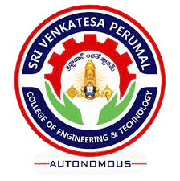

SRI VENKATESA PERUMAL COLLEGE OF ENGINEERING & TECHNOLOGY
| AUTONOMOUS | NACC | NBA |
RVS Nagar, K.N Road,Puttur, Tirupathi dist, AP
DEPARTMENT OF ELECTRONICS & COMMUNICATION ENGINEERING
 Sri Venkatesa Perumal College of Engineering (SVPP), Puttur, Tirupati, Chittoor (dt.), A.P was
established in 2001, and is Promoted by TAMILIAN EDUCATION ACADEMY.
Since its inception, it has transformed itself into a truly premier integrated interdisciplinary
technological institute spread in an area 25 acres , accommodating well ventilated classrooms,
state-of-the art labs, well maintained outdoor & indoor sports and games facilities.
70% of the Faculty on payroll was ratified by the affiliating University. Hence, SVPP recruits
only distinguished academicians, research scientists and experienced faculty who have been carefully
chosen through a search from a pool reputed organizations.
Since its inception, it has transformed itself into a truly premier integrated interdisciplinary
technological institute spread in an area 25 acres , accommodating well ventilated classrooms,
state-of-the art labs, well maintained outdoor & indoor sports and games facilities.
Sri Venkatesa Perumal College of Engineering (SVPP), Puttur, Tirupati, Chittoor (dt.), A.P was
established in 2001, and is Promoted by TAMILIAN EDUCATION ACADEMY.
Since its inception, it has transformed itself into a truly premier integrated interdisciplinary
technological institute spread in an area 25 acres , accommodating well ventilated classrooms,
state-of-the art labs, well maintained outdoor & indoor sports and games facilities.
70% of the Faculty on payroll was ratified by the affiliating University. Hence, SVPP recruits
only distinguished academicians, research scientists and experienced faculty who have been carefully
chosen through a search from a pool reputed organizations.
Since its inception, it has transformed itself into a truly premier integrated interdisciplinary
technological institute spread in an area 25 acres , accommodating well ventilated classrooms,
state-of-the art labs, well maintained outdoor & indoor sports and games facilities.
WORKSHOP ON WORDPRESS
CSE EVENT on: December 8, 2021
This workshop is aimed at beginners and provides viewers a brief introduction to the WordPress open-source software.
The workshop introduces WordPress, This workshop is aimed at beginners and provides viewers a brief introduction to the WordPress open-source software.
The workshop introduces WordPress, provides its brief history, and shares its features. It also provides an overview of
how to install WordPress, provide a demo of features such as posts and pages, taxonomies, themes, plugins, custom post
types, and custom fields. provides its brief history, and shares its features. It also provides an overview of
how to install WordPress, provide a demo of features such as posts and pages, taxonomies, themes, plugins, custom post
types, and custom fields.The workshop introduces WordPress, provides its brief history, and shares its features. It also provides an overview of
how to install WordPress, provide a demo of features such as posts and pages, taxonomies, themes, plugins, custom post
types, and custom fields. design brings your electronic circuits to life in the physical form. Using
layout software, the PCB design process combines component placement and routing to define electrical
connectivity on a manufactured circuit boards. Since its inception, it has transformed itself into a truly premier
integrated interdisciplinary technological institute spread in an area 25 acres , accommodating well ventilated classrooms,
state-of-the art labs, well maintained outdoor & indoor sports and games facilities.
WORKSHOP ON WORDPRESS
CSE EVENT on: December 8, 2021
This workshop is aimed at beginners and provides viewers a brief introduction to the WordPress
open-source software. The workshop introduces WordPress, provides its brief history, and shares
its features. It also provides an overview of how to install WordPress, provide a demo of features
such as posts and pages, taxonomies, themes, plugins, custom post types, and custom fields.
WORKSHOP ON PCB DESIGN
ECE EVENT on: December 28,2021
Printed circuit board (PCB) This workshop is aimed at beginners and provides viewers a brief introduction to the WordPress open-source software.
The workshop introduces WordPress, provides its brief history, and shares its features. It also provides an overview of
how to install WordPress, provide a demo of features such as posts and pages, taxonomies, themes, plugins, custom post
types, and custom fields. design brings your electronic circuits to life in the physical form. Using
layout software, the PCB design process combines component placement and routing to define electrical
connectivity on a manufactured circuit boards. Since its inception, it has transformed itself into a truly
premier integrated interdisciplinary technological institute spread in an area 25 acres , accommodating well
ventilated classrooms, state-of-the art labs, well maintained outdoor & indoor sports and games facilities.
70% of the Faculty on payroll was ratified by the affiliating University. Hence, SVPP recruits only
distinguished academicians, research scientists and experienced faculty who have been carefully chosen
through a search from a pool reputed organizations.